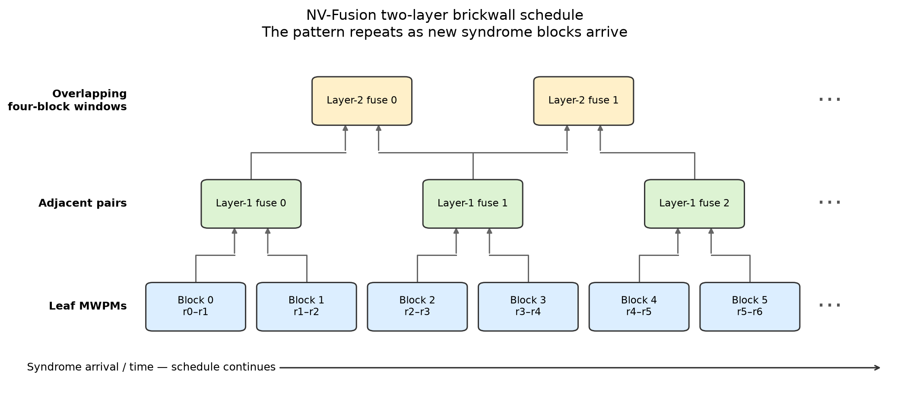
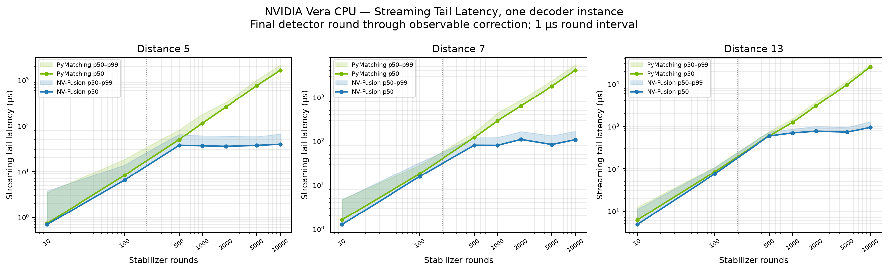
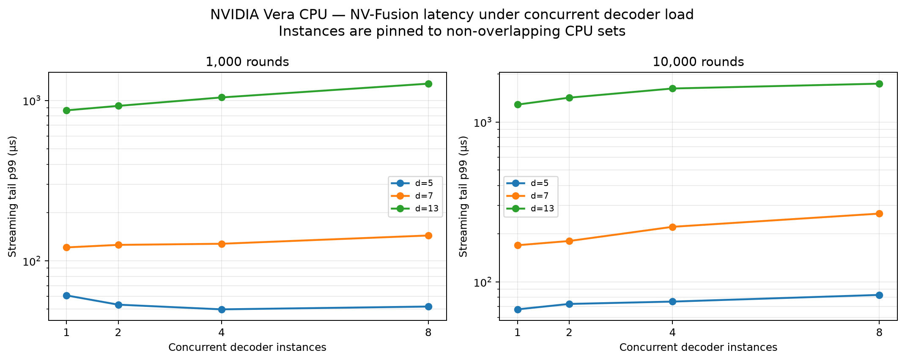

Bounding Real-Time Decode Latency With NV-Fusion
The NVIDIA Fusion decoder (nv-fusion-decoder) is a multi-threaded
minimum-weight perfect matching (MWPM) decoder designed for long-running,
real-time quantum error correction. It divides the detector matching graph
into temporal leaf blocks, solves independent leaves as syndrome data arrives,
and fuses their matchings through a dependency graph. This moves most decoding
work ahead of the final syndrome round and limits how much work remains before
the observable correction is available. Its implementation combines the
Sparse Blossom and
Fusion Blossom algorithms. The algorithm is
motivated by the experimental description in
Quantum error correction below the surface code threshold (Google Quantum AI).
This study measures that final response time, called the streaming tail latency, on rotated surface-code Z-memory circuits. For 10,000-round experiments at code distances 5, 7, and 13, NV-Fusion lowered median streaming tail latency by 27–41x and p99 latency by 22–32x relative to monolithic PyMatching.
What Is Streaming Tail Latency?
Streaming tail latency starts immediately before the final
enqueue_syndrome() call and ends after get_obs_corrections() returns.
It therefore measures the time from receiving the final detector round to
obtaining the correction needed by a real-time controller.
The benchmark also records the sum of time spent in every streaming enqueue call. That sum excludes the configured wait between rounds and is useful for measuring decoder work, but it is not the final-round response time reported on this page.
For long shots, the default NV-Fusion schedule uses leaves of 2 * d rounds,
where d is the measured code distance. Leaves are solved while later
syndrome rounds are still arriving, so only the last leaf and the remaining
fusions lie on the final-round critical path. PyMatching instead solves the
complete matching graph after the final round, causing its tail latency to
grow with the full experiment length.

Each layer-1 fuse waits for two adjacent leaf solutions. The staggered layer-2 fuses then combine neighboring layer-1 results, creating overlapping four-block windows while keeping each fusion local.
Experiment Configuration
All measurements were collected on one NVIDIA Vera CPU system. NV-Fusion and PyMatching are CPU decoders; the benchmark was bound to a single NUMA node. Each point contains 1,000 timed shots after 20 warm-up shots. The physical noise model applies the same probability to Clifford depolarization, reset flips, measurement flips, and inter-round data depolarization.
The result logs record the CPU allocation, but do not capture the exact CPU SKU, OS, compiler, CUDA-Q version, container digest, or decoder dependency revisions. The source revision above identifies the benchmark implementation used to interpret the data, not a complete reproducibility manifest.
Parameter |
Value |
|---|---|
Platform |
NVIDIA Vera CPU, one NUMA node |
Available CPUs |
88 CPUs (CPUs 0–87); 352 reported by
|
Circuit |
Stim rotated surface-code Z memory |
Code distances |
5, 7, 13 |
Stabilizer rounds |
10, 100, 500, 1,000, 2,000, 5,000, 10,000 |
Physical noise probability |
|
Timed and warm-up shots |
1,000 timed shots and 20 warm-up shots per instance |
Streaming round interval |
1 microsecond |
Decoder threads |
|
CPU placement |
Instances pinned to disjoint CPU sets with |
NV-Fusion schedule |
Automatic |
Comparison decoder |
PyMatching, using the same decomposed detector error model and sampled syndromes |
Streaming Tail Latency
The following figure shows median and p99 streaming tail latency for one decoder instance. Up to 100 rounds, the automatic schedule uses one exact leaf, and NV-Fusion broadly follows PyMatching. Above the 192-round automatic schedule threshold, NV-Fusion switches to fused leaves and its tail latency becomes only weakly dependent on the total number of rounds.

Between 500 and 10,000 rounds, a 20x increase in experiment length, NV-Fusion p99 tail latency increased by only 1.0–1.7x across the three distances, while PyMatching p99 latency increased by 26–37x. At 10,000 rounds, NV-Fusion p99 tail latency ranged from 67 microseconds to 1.28 milliseconds; the corresponding PyMatching values were 2.13 and 28.00 milliseconds.
Median speedup increased from 1.00–1.51x at 500 rounds to 26.6–41.4x at 10,000 rounds. At 10,000 rounds, p99 speedup was 21.8–32.0x.
Lower latency is useful only when decoding quality is preserved. Across these 1,000-shot measurements, the observed logical error rates for NV-Fusion and PyMatching differed by no more than 0.001 in absolute terms. This sample is not sufficient to establish equivalent logical error rates, particularly for points with no observed failures; a production schedule must also be validated with enough shots to resolve its target logical error rate.
These percentiles describe the measured distribution of 1,000 shots. In particular, p99 is determined by roughly the ten slowest samples and should not be interpreted as a worst-case latency guarantee.
Latency With Concurrent Decoders
A real-time system may decode several logical qubits concurrently. The benchmark therefore runs independent decoder instances in parallel, pins each instance to a disjoint share of the NUMA node, and pools their latency samples. The automatic thread allocation decreases from 84 threads for one instance to 40, 19, and 10 threads per instance for two, four, and eight instances, respectively.

At 10,000 rounds, increasing from one to eight instances raised p99 tail latency by 1.23x at distance 5, 1.58x at distance 7, and 1.35x at distance 13. These results include both reduced per-instance thread pools and contention for the shared CPU memory system.
See Also
NVIDIA Fusion Decoder API – decoder behavior, schedule selection, parameters, and Python API
benchmarks/qec/nv_fusion_latency/README.md– commands and plotting instructions used for this study